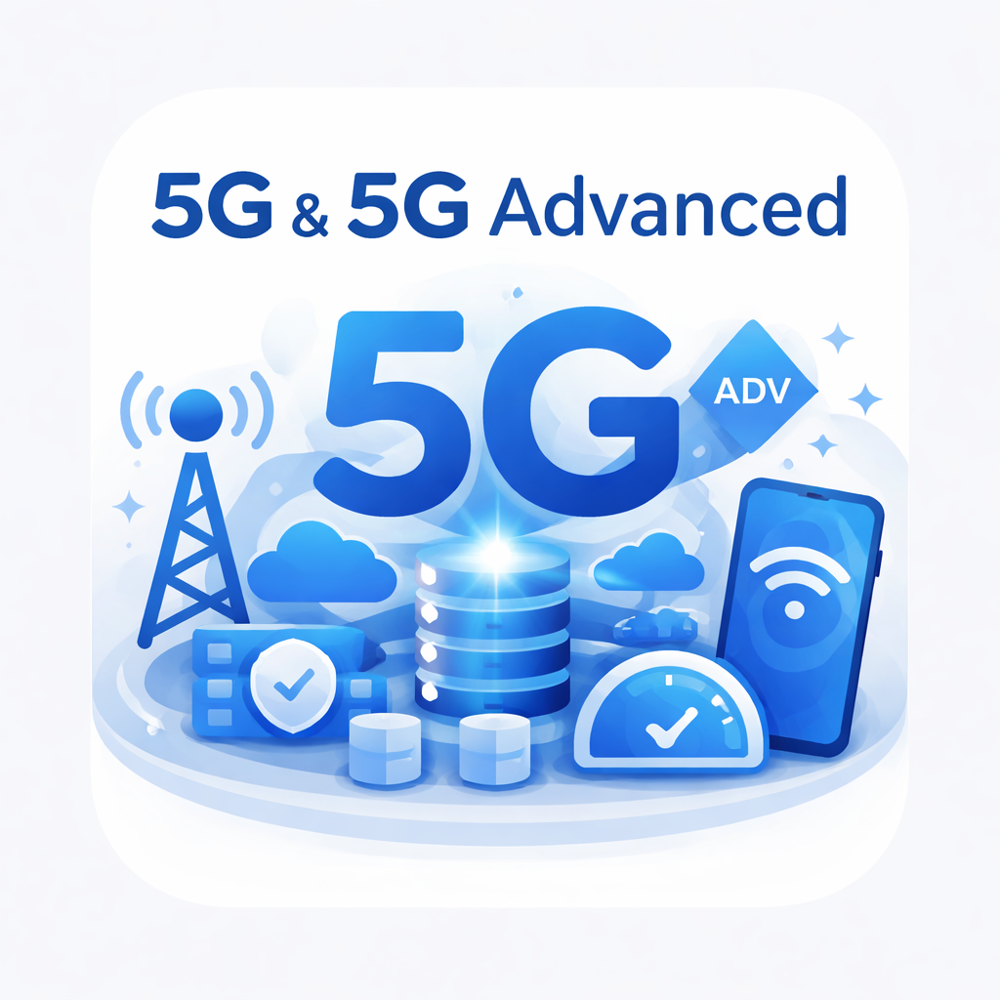

5G

5G SA Interactive Explorer
A broad 5G Standalone and 5G-Advanced core reference — learn from the ground up with 5 introductory modules (what 5G is, how it differs from 4G, network functions, interfaces, and 5G-Advanced), then step through 20 interactive protocol flows across registration, PDU sessions, mobility, edge computing (ULCL), network slicing, VoNR, SMS, analytics, converged charging, and current Rel-19/Rel-20 transition context. Steps include representative 3GPP-style payloads with inline annotations.
5 learning modules · 20 flows · 5 domains · 80+ glossary terms · 6 reference pages